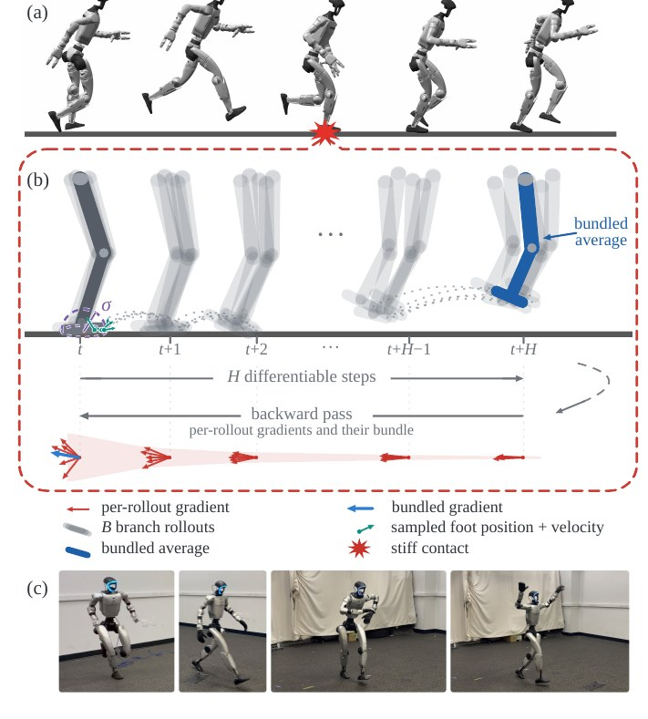
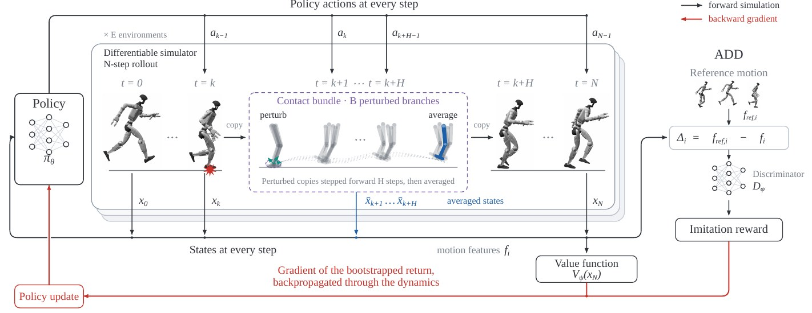
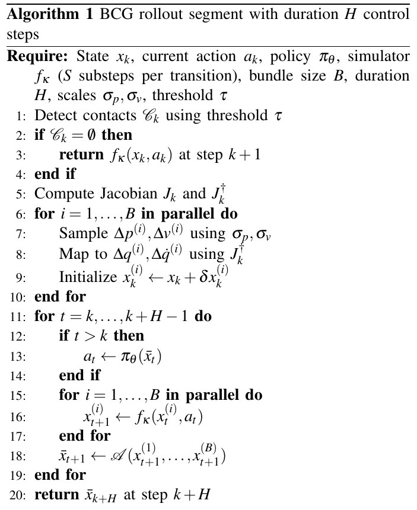
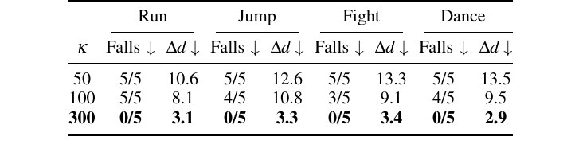
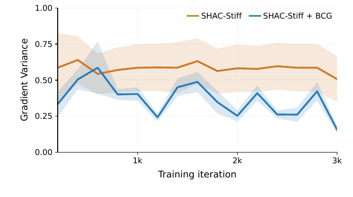
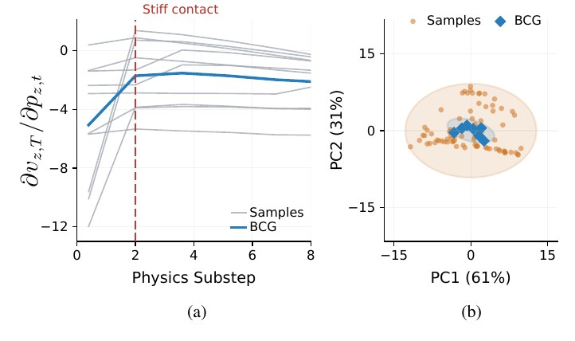
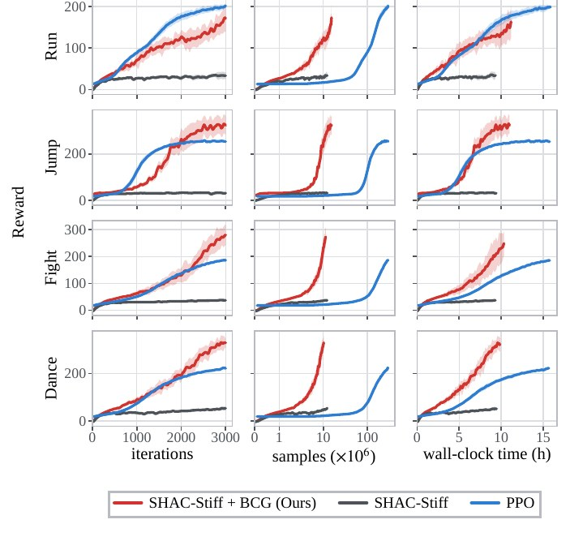
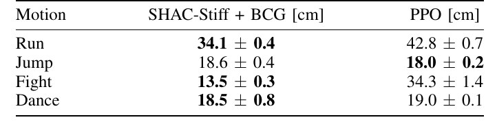

捆绑接触梯度：让可微分仿真稳定支撑可部署的动态任务
Bundled Contact Gradients: Stabilizing Differentiable Simulation for Deployable Dynamic Tasks
1 南加州大学（USC）· 2 苏黎世联邦理工学院（ETH Zurich）· 3 NVIDIA · 4 苏黎世应用科技大学（ZHAW） ｜ 通讯作者：Dyuman Aditya（agdyuman@usc.edu）
摘要 Abstractp.1
Differentiable simulation provides analytic gradients of robot dynamics, enabling fast and sample-efficient first-order policy optimization. However, obtaining smooth and informative gradients through rigid-body contact typically requires softened contact models, often at the expense of physical fidelity and thereby limiting learned policies largely to simulation. This trade-off becomes particularly consequential for dynamic humanoid motions, where accurate contact dynamics are critical for transferring policies to the real world.
可微分仿真能够给出机器人动力学的解析梯度，从而支持快速且样本高效的一阶策略优化。然而，要在刚体接触中获得平滑且富有信息的梯度，通常必须采用软化的接触模型——这往往以牺牲物理保真度为代价，进而使学到的策略基本只能停留在仿真之中。对于动态的人形运动，这一权衡尤为关键：准确的接触动力学正是把策略迁移到真实世界的前提。
Increasing contact stiffness in rigid-body simulation improves the fidelity of interactions, but also makes the dynamics increasingly sensitive to small state perturbations, producing high-variance gradients that can destabilize first-order policy learning. To address this, we propose Bundled Contact Gradients (BCG), a contact-local randomized smoothing framework for differentiable policy learning.
在刚体仿真中提高接触刚度可以改善交互的保真度，但也会让动力学对小幅度状态扰动越来越敏感，产生高方差梯度，从而破坏一阶策略学习的稳定性。为此，我们提出 Bundled Contact Gradients（BCG，捆绑接触梯度）：一个面向可微分策略学习的、接触局部化（contact-local）的随机平滑框架。
When stiff contact is detected, our method evaluates a local bundle of randomized perturbation rollouts around the stiff contact configuration and aggregates their gradient signal thereby reducing gradient variance. We demonstrate the effectiveness of our method by successfully training and transferring dynamic motions zero-shot onto a real-world Unitree G1 humanoid platform. Videos and supplementary information can be found at bundledcontactgradients.github.io
当检测到刚性接触时，我们的方法会在该刚性接触构型周围评估一小束（bundle）随机扰动 rollout，并聚合它们的梯度信号，从而降低梯度方差。我们成功训练出动态动作、并将其零样本迁移到真实的 Unitree G1 人形机器人平台，以此验证方法的有效性。视频与补充材料见 bundledcontactgradients.github.io。

I 引言Introductionp.1
Learning dynamic, contact-rich behaviors, such as agile locomotion and whole-body motions is predominantly achieved by model-free reinforcement learning (RL) [1], [2]. By optimizing policies without differentiating through the underlying dynamics, model-free RL can be applied directly to simulators with non-smooth contact models and has made it the workhorse behind recent sim-to-real successes in legged-robot control [3]. However, its reliance on zero-order gradient estimation makes policy optimization sample inefficient, particularly for long-horizon, high-dimensional control problems [4]. As a result, training often requires billions of environment interactions and substantial wall-clock time [5].
学习动态的、接触丰富的行为——例如敏捷运动与全身动作——目前主要依靠无模型强化学习（RL）[1], [2]。无模型 RL 无需对底层动力学求导即可优化策略，因此能直接作用于采用非光滑接触模型的仿真器，也正是它支撑了足式机器人控制领域近来的诸多 sim-to-real 成功 [3]。然而，它依赖零阶梯度估计，导致策略优化的样本效率低下，在长时序、高维控制问题上尤其如此 [4]。结果是，训练往往需要数十亿次环境交互与大量的墙上时间 [5]。
Differentiable simulation offers a more efficient alternative. By exposing analytic derivatives of the dynamics, it enables first-order policy optimization, by backpropagating gradients through the simulated dynamics to the policy. When the dynamics are smooth, the resulting gradients have far lower variance than their zero-order counterparts, and methods such as SHAC [4] report large gains in sample and wall-clock efficiency over zero-order RL. The promise of first-order learning, however, has largely been confined to simulation due to highly softened contact models that are employed.
可微分仿真提供了一条更高效的路径。它把动力学的解析导数暴露出来，使梯度可以穿过被仿真的动力学回传到策略，从而实现一阶策略优化。当动力学足够平滑时，由此得到的梯度方差远低于零阶方法；SHAC [4] 等方法报告了相对零阶 RL 在样本效率与墙上时间上的大幅收益。然而，由于普遍采用高度软化的接触模型，一阶学习的这种潜力在很大程度上被限制在仿真之中。
Modeling stiff ground contacts in rigid-body differentiable simulation for legged control introduces a fundamental trade-off between physical fidelity and gradient quality. Compliant, low-stiffness contact yields smooth gradients but permits soft, penetrating interactions that do not transfer to hardware. Raising the stiffness toward physically faithful, deployable values restores realism but makes the analytic gradient high-variance and biased across contact events [6], [7], which destabilizes first-order optimization. Existing first-order methods largely sidestep this tension: they either soften contact or shorten the differentiable horizon around contact events [8], discarding gradient information where contact-rich behavior must be learned.
在面向足式控制的刚体可微分仿真中刻画刚性地面接触，会引出一个根本性权衡：物理保真度与梯度质量不可兼得。柔顺的低刚度接触能给出平滑梯度，却允许“软而穿透”的交互，这类交互无法迁移到硬件上。把刚度提高到物理上可信、可部署的数值，可以恢复真实感，但会使解析梯度在接触事件附近变成高方差且有偏的 [6], [7]，从而破坏一阶优化的稳定性。既有的一阶方法大体上都在回避这一矛盾：它们要么软化接触，要么在接触事件附近缩短可微分的时域 [8]——而恰恰是在最需要学习接触丰富行为的地方，梯度信息被丢弃了。
Our approach is to retain stiff contact dynamics while stabilizing the gradients used for policy learning. At a stiff contact event, the gradient from a single contact configuration can be highly sensitive to small perturbations; averaging gradients over nearby configurations can provide a more stable learning signal. Building on randomized smoothing and bundle gradients [9], [10], we apply this principle within first-order policy learning. But rather than applying smoothing globally, as in prior trajectory-optimization settings where evaluating bundles over entire trajectories can be computationally expensive, we apply it locally, only at stiff contact events.
我们的思路是：保留刚性接触动力学，同时稳定用于策略学习的梯度。在刚性接触事件处，来自单一接触构型的梯度可能对小扰动极度敏感；而对邻近构型上的梯度取平均，往往能给出更稳定的学习信号。我们在随机平滑与捆绑梯度 [9], [10] 的基础上，把这一原则引入一阶策略学习。但与先前轨迹优化中“全局平滑”的做法（在整条轨迹上评估 bundle 计算代价很高）不同，我们只在刚性接触事件处、局部地施加平滑。
We propose Bundled Contact Gradients (BCG) (Fig. 1): when stiff contact is detected, the simulator evaluates a small bundle of perturbations sampled in Cartesian space, and simulated over a horizon in parallel. Aggregating the branches yields a locally smoothed transition, so the forward rollout retains stiff, deployable contact while the backward pass with automatic differentiation [11] receives a lower-variance, averaged contact gradient. Because bundling is triggered only at stiff contact and executed in parallel on the GPU, the overhead is limited and incurred only where the first-order gradient is most fragile.
我们提出 捆绑接触梯度（BCG）（图 1）：一旦检测到刚性接触，仿真器就在笛卡尔空间中采样一小束扰动，并在一个时域上并行仿真这些分支。对各分支的聚合得到一个局部平滑的转移——于是前向 rollout 仍保持刚性、可部署的接触，而反向传播（自动微分 [11]）得到的则是方差更低、经过平均的接触梯度。由于捆绑只在刚性接触处触发、且在 GPU 上并行执行，额外开销有限，并且只发生在“一阶梯度最脆弱”的地方。
We integrate BCG into Warp [11] and use it within a SHAC-style actor-critic framework for first-order policy optimization. To learn dynamic humanoid behaviors, we apply this framework to motion imitation, where the policy tracks reference motions using rewards from Adversarial Differential Discriminators (ADD) [12].
我们把 BCG 集成进 Warp [11]，并将其用于一个 SHAC 风格的 actor–critic 框架中做一阶策略优化。为学习动态的人形行为，我们把该框架用于动作模仿：策略借助对抗微分判别器（Adversarial Differential Discriminators, ADD）[12] 给出的奖励来跟踪参考动作。
In summary, our main contributions are:
总结来说，我们的主要贡献是：
• We introduce Bundled Contact Gradients (BCG), a contact-local randomized-smoothing scheme that stabilizes first-order policy gradients under stiff contact without softening the forward dynamics.
• 我们提出 BCG：一种接触局部化的随机平滑方案，能在不软化前向动力学的前提下，稳定刚性接触下的一阶策略梯度。
• We show that BCG learns deployable humanoid motion-tracking policies with fewer samples and less training time than PPO, while achieving lower tracking error after sim-to-sim transfer.
• 我们证明 BCG 学到的可部署人形动作跟踪策略，在样本数与训练时间上都少于 PPO，同时在 sim-to-sim 迁移之后达到更低的跟踪误差。
• We demonstrate zero-shot sim-to-real transfer of dynamic motions learned through differentiable simulation to real humanoid hardware.
• 我们展示了：通过可微分仿真学到的动态动作，可以零样本迁移到真实人形硬件上。
To the best of our knowledge, this work represents the first successful zero-shot transfer of a policy trained in differentiable simulation onto a real humanoid platform, as well as the first pairing of ADD with first-order differentiable-simulation policy learning.
据我们所知，这是首个把可微分仿真中训练的策略成功零样本迁移到真实人形平台的工作，也是首次把 ADD 与一阶可微分仿真策略学习结合在一起。
II 相关工作Related Workp.2
II.A 用于动态机器人控制的强化学习p.2
Model-free RL, and PPO [13] in particular, is the dominant paradigm for learning dynamic and contact-rich robot skills [14], [15]. Because it optimizes through sampled returns rather than dynamics derivatives, it is robust to the discontinuous physics of contact and underlies many sim-to-real results in legged locomotion [16], [17]. However, this robustness comes at the price of high-variance policy gradients and correspondingly poor sample efficiency, especially with higher dimensional systems like humanoids.
无模型 RL（尤其是 PPO [13]）是学习动态、接触丰富机器人技能的主流范式 [14], [15]。它通过采样回报而非动力学导数来优化，因此对接触的不连续物理具有鲁棒性，也是足式运动众多 sim-to-real 成果的基础 [16], [17]。但这种鲁棒性的代价是策略梯度方差高、样本效率相应变差——在像人形机器人这样的高维系统上尤其如此。
II.B 可微分仿真与一阶策略优化p.2
Differentiable simulation has progressed from early engines [18], [19] to GPU-accelerated frameworks [20], [21], [11], [22], [23], enabling first-order policy optimization by backpropagating through simulated rollouts [24], [25], [26]. SHAC [4] combines short differentiable windows with a learned critic, and subsequent work extends first-order learning to deployable locomotion [27], [28], agile flight [29], [26], and multiphysics settings [30], [31].
可微分仿真从早期的引擎 [18], [19] 发展到 GPU 加速框架 [20], [21], [11], [22], [23]，使得通过“穿过被仿真 rollout 的反向传播”来做一阶策略优化成为可能 [24], [25], [26]。SHAC [4] 把短可微分窗口与学习得到的 critic 结合；后续工作又把一阶学习扩展到可部署的足式运动 [27], [28]、敏捷飞行 [29], [26] 以及多物理场设置 [30], [31]。
For quadruped locomotion, Song et al. [28] combine forward simulation in a non-differentiable simulator with gradients from a single rigid-body surrogate, while Luo et al. [32] guide SHAC with a frozen trotting policy and learned residual actions. Schwarke et al. [27] demonstrate zero-shot transfer of quadruped locomotion using an analytically smoothed contact model, described in Section III-C. We build on this contact formulation to learn dynamic humanoid motions, where smaller stability margins place greater demands on accurate and robust foot–ground interactions.
在四足运动方面，Song et al. [28] 把非可微分仿真器中的前向仿真与“单刚体代理模型”提供的梯度结合起来；Luo et al. [32] 则用一个冻结的小跑策略加学习得到的残差动作来引导 SHAC。Schwarke et al. [27] 借助解析平滑的接触模型（见 III-C 节）实现了四足运动的零样本迁移。我们正是在这一接触表述的基础上学习动态人形动作——人形的稳定性裕度更小，因此对足—地交互的准确性与鲁棒性提出了更高要求。
II.C 穿过刚性接触的梯度p.3
The contact formulation in a differentiable simulator is important for both physical fidelity and gradient quality. Soft penalty-based contact models ease differentiation by regularizing contact forces [21], [22], but excessive compliance can distort the foot–ground interactions needed for hardware transfer. Increasing the stiffness of these models improves physical fidelity, but makes the dynamics more difficult to resolve accurately with finite simulation timesteps, leading to inaccurate autodiff gradients [33].
可微分仿真器中的接触表述，同时关系到物理保真度与梯度质量。基于软惩罚的接触模型通过对接触力做正则化而便于求导 [21], [22]，但过度的柔顺会扭曲硬件迁移所需的足—地交互。提高这类模型的刚度可以改善物理保真度，却让动力学更难在有限仿真步长下被准确求解，从而产生不准确的自微分梯度 [33]。
To address this issue, Paulus et al. [33] introduce adaptive time integration to more accurately resolve stiff contact events and improve gradient fidelity. However, the resulting increase in simulation steps raises computational cost and lengthens the differentiable rollout which can lead to vanishing or exploding gradients.
为解决该问题，Paulus et al. [33] 引入自适应时间积分，以更准确地求解刚性接触事件、提升梯度保真度。然而由此增加的仿真步数抬高了计算成本、拉长了可微分 rollout，进而可能引发梯度消失或爆炸。
Hard-contact models instead express non-penetration and friction through complementarity constraints, providing higher physical fidelity but less informative gradients around contact transitions. Werling et al. [34] analytically differentiate a Linear Complementarity Problem (LCP). Dojo [35] uses a Nonlinear Complementarity Problem (NCP) and implicit differentiation of its interior-point solver. It obtains smooth contact gradients by implicitly differentiating a relaxed complementarity problem. However, neither report implementation targets massively parallel GPU rollouts, and both can leave gradient-based optimization trapped in poor local solutions.
硬接触模型则通过互补约束来表达非穿透与摩擦，物理保真度更高，但在接触切换附近的梯度信息更少。Werling et al. [34] 对线性互补问题（LCP）做解析求导；Dojo [35] 使用非线性互补问题（NCP）并对其内点求解器做隐式微分，通过对松弛后的互补问题隐式求导获得平滑的接触梯度。但这两项工作报告的实现都不是面向大规模并行 GPU rollout 的，而且都可能让基于梯度的优化陷入较差的局部解。
Gradient propagation over long rollouts presents a further difficulty: repeated Jacobian products can cause vanishing or exploding gradients [7]. AHAC [8] adapts the differentiable horizon using a contact-stiffness constraint and bootstraps the remaining return with a critic. This limits exposure to unstable derivatives, but truncating at stiff contacts discards direct gradient information about how actions influence subsequent motion through these events, potentially removing sensitivities important for learning contact-rich behavior.
长 rollout 上的梯度传播还有另一重困难：反复的 Jacobian 乘积会导致梯度消失或爆炸 [7]。AHAC [8] 依据接触刚度约束自适应地调整可微分时域，并用 critic 对剩余回报做自举。这限制了与不稳定导数的接触，但在刚性接触处截断，会丢弃“动作如何经由这些接触事件影响后续运动”的直接梯度信息，从而可能抹掉对学习接触丰富行为至关重要的敏感性。
To combine informative gradients with physically faithful contact, we build on the analytically smoothed compliant contact model of Schwarke et al. [27], described in Section III-C, and increase its stiffness while stabilizing its gradients through local randomized smoothing.
为了兼顾有信息的梯度与物理上可信的接触，我们建立在 Schwarke et al. [27] 的解析平滑柔顺接触模型之上（见 III-C 节），提高其刚度的同时，通过局部随机平滑来稳定它的梯度。
II.D 用于接触的随机平滑与捆绑梯度p.3
Randomized smoothing offers a way to obtain smoother contact responses by averaging over nearby, randomly perturbed configurations. Bundled gradients replace the exact contact derivative with a randomized-smoothing estimate and improve convergence of trajectory optimization through contact [9], an approach that connects the sampling behavior of RL to analytic smoothing and enables global planning over quasi-dynamic contact models [36], [37], complementing classical contact-implicit trajectory optimization [38], [39].
随机平滑通过对邻近的、被随机扰动的构型取平均，提供了一条获得更平滑接触响应的途径。捆绑梯度（bundled gradients）用随机平滑估计替代精确的接触导数，改善了穿过接触的轨迹优化收敛性 [9]；这一思路把 RL 的采样行为与解析平滑联系起来，并使得在准动态接触模型上做全局规划成为可能 [36], [37]，与经典的接触隐式轨迹优化 [38], [39] 形成互补。
Randomized smoothing has likewise been used to augment differentiable physics and to control nonsmooth systems [40], [10], with recent work addressing the bias such smoothing introduces [41]. These methods operate largely in trajectory optimization or quasi-static manipulation and smooth the contact model globally. In contrast, we adapt randomized smoothing to first-order RL policy learning and apply it locally, only at stiff contacts, so that dynamic, deployable motion-tracking can be trained under stiff contact.
随机平滑同样被用于增强可微分物理、以及控制非光滑系统 [40], [10]；近期工作还处理了这种平滑所引入的偏差 [41]。这些方法大体上作用于轨迹优化或准静态操作，并且是对接触模型做全局平滑。与之相反，我们把随机平滑改造用于一阶 RL 策略学习，并只在刚性接触处局部地施加，从而能够在刚性接触下训练动态的、可部署的动作跟踪。
III 背景Backgroundp.3
III.A 强化学习p.3
Policy learning is formalized as a Markov decision process (\(\mathcal{X}\), \(\mathcal{A}\), p, r, γ) with state xt ∈ \(\mathcal{X}\), action at ∈ \(\mathcal{A}\), transition density p(xt+1 | xt, at), reward r(xt, at), and discount factor γ ∈ [0, 1). A stochastic policy πθ(at | xt) with parameters θ induces a trajectory distribution. The objective is to maximize the expected discounted return
策略学习被形式化为马尔可夫决策过程 (\(\mathcal{X}\), \(\mathcal{A}\), p, r, γ)：状态 xt ∈ \(\mathcal{X}\)、动作 at ∈ \(\mathcal{A}\)、转移密度 p(xt+1 | xt, at)、奖励 r(xt, at)、折扣因子 γ ∈ [0, 1)。参数为 θ 的随机策略 πθ(at | xt) 诱导出一个轨迹分布。目标是最大化期望折扣回报
Model-free methods estimate ∇θJ using the likelihood-ratio (score-function) identity
无模型方法用似然比（得分函数）恒等式来估计 ∇θJ：
where Ât is an advantage estimate [42]. This estimator differentiates only the policy and treats the dynamics as a black box; it is therefore a zero-order gradient that requires no derivatives of the physics and is robust to non-smooth contact, at the cost of variance that grows with the horizon and action dimension. PPO [13] is a widely used instance.
其中 Ât 是优势估计 [42]。该估计器只对策略求导、把动力学当作黑箱；因此它是一个零阶梯度——不需要物理的任何导数，对非光滑接触具有鲁棒性，代价则是方差会随时域长度与动作维度增长。PPO [13] 是其中最常用的一个实例。
III.B 可微分仿真p.3
A differentiable simulator replaces the black-box transition of Section III-A with a smooth, differentiable map
可微分仿真器用一个光滑、可微的映射，替换掉 III-A 节中的黑箱转移：
where κ parameterizes the stiffness of the contact model, and it exposes the transition Jacobians ∂fκ/∂x and ∂fκ/∂a. The contact formulation used in this work is described in Section III-C. Rolling out a deterministic policy at = πθ(xt) over a horizon N produces a differentiable return J(θ) = ∑t γtr(xt, at), whose gradient is obtained by backpropagating through the unrolled computation graph, with the state sensitivity propagated recursively through time,
其中 κ 参数化了接触模型的刚度；同时它把转移 Jacobian ∂fκ/∂x 与 ∂fκ/∂a 暴露出来。本文所用的接触表述见 III-C 节。把确定性策略 at = πθ(xt) 在时域 N 上展开，得到可微回报 J(θ) = ∑t γtr(xt, at)；其梯度通过在被展开的计算图上反向传播获得，其中状态敏感性随时间递归传播：
This first-order gradient is typically far lower in variance than the score-function estimator, which is the source of the improved sample and wall-clock efficiency of differentiable-simulation methods. The advantage holds only while fκ is smooth: as κ is increased toward physically faithful, deployable contact, the Jacobians become stiff and the gradient develops large variance across contact events. Overcoming this failure mode is the subject of Section IV.
这个一阶梯度通常比得分函数估计器的方差低得多，这正是可微分仿真方法在样本效率与墙上时间上占优的来源。但这一优势只有在 fκ 光滑时才成立：当 κ 朝物理上可信、可部署的接触增大时，Jacobian 变得刚硬，梯度会在接触事件处出现很大方差。克服这一失效模式，正是第 IV 节的主题。
III.C 解析平滑的接触模型p.3
We use the contact model of Schwarke et al. [27], which replaces discontinuous hard-contact activation with a continuous, analytically smoothed response, enabling gradient computation through contact. Within Moreau's time-stepping scheme [43], contact impulses are computed using a modified Gauss–Seidel solver and scaled according to the penetration depth d by
我们采用 Schwarke et al. [27] 的接触模型：它以连续的、解析平滑的响应取代不连续的硬接触激活，使得梯度能够穿过接触进行计算。在 Moreau 的时间步进格式 [43] 内，接触冲量由改进的 Gauss–Seidel 求解器计算，并按照穿透深度 d 进行缩放：
where d > 0 denotes penetration and d < 0 denotes separation. This scaling replaces abrupt contact activation with a smooth transition and permits forces at small separations, providing gradient information before contact occurs.
其中 d > 0 表示穿透，d < 0 表示分离。这一缩放把突变的接触激活替换成平滑过渡，并允许在小的分离间隙上产生力——从而在真正接触发生之前就提供梯度信息。
The parameter κ controls the extent of smoothing (i.e. the contact stiffness): smaller values provide a wider, softer transition, whereas larger values reduce smoothing and approach the original hard-contact response, increasing physical fidelity in the rigid-contact regime. For finite κ, contact activation remains continuous, although its derivatives become increasingly sensitive as κ grows. Throughout this paper, stiff contact therefore means a large but finite κ, rather than the discontinuous hard-contact limit.
参数 κ 控制平滑的程度（即接触刚度）：取值越小，过渡越宽、越软；取值越大，平滑越弱、越接近原本的硬接触响应，从而在刚性接触区间内提高物理保真度。对有限的 κ，接触激活始终是连续的，只是随 κ 增大，其导数会变得越来越敏感。因此在本文全文中，刚性接触（stiff contact）指的是“很大但有限”的 κ，而不是不连续的硬接触极限。
III.D 基于 SHAC 的一阶策略优化p.4
First-order policy optimization updates the policy using analytic gradients obtained by backpropagating through the differentiable rollout. While this can provide lower-variance updates than zero-order RL, differentiating through long horizons can cause vanishing or exploding gradients due to repeated Jacobian products [4], [8]. In this work we use Short Horizon Actor Critic (SHAC) [4], which collects short N-step differentiable rollouts from E simulated environments in parallel and bootstraps the remaining return with a learned critic Vψ. Its actor objective is
一阶策略优化利用“穿过可微分 rollout 反向传播”所得的解析梯度来更新策略。相比零阶 RL，这能带来更低方差的更新；但穿越长时域求导会因反复的 Jacobian 乘积而导致梯度消失或爆炸 [4], [8]。本文使用短时域 actor–critic（SHAC）[4]：它从 E 个并行仿真环境中采集短的 N 步可微分 rollout，并用学习得到的 critic Vψ 对剩余回报做自举。其 actor 目标为
with the critic trained by value regression. The short horizon limits unstable gradient propagation while retaining direct dynamics gradients over each rollout. SHAC nonetheless inherits the contact sensitivity of the underlying gradient: at the high stiffness required for deployable behavior, its truncated gradients can vary sharply with individual contact events, the gap addressed in next Section IV.
其中 critic 通过价值回归训练。短时域限制了不稳定的梯度传播，同时在每个 rollout 内保留了直接的动力学梯度。尽管如此，SHAC 仍继承了底层梯度对接触的敏感性：在可部署行为所需的高刚度下，其被截断的梯度会随个别接触事件剧烈变化——这正是下一节（第 IV 节）要弥合的缺口。
IV 捆绑接触梯度Bundled Contact Gradientsp.4
We propose Bundled Contact Gradients (BCG) to stabilize first-order policy learning through stiff contact. At a stiff contact event, BCG creates nearby contact configurations, advances them in parallel, and aggregates their states. Differentiating through this local bundle combines sensitivities from several contact realizations, reducing reliance on any single derivative. Each branch retains the large but finite contact stiffness κ of Section III-C. Figure 2 summarizes how BCG connects the simulator, policy, and imitation objective.
我们提出捆绑接触梯度（BCG），用以稳定穿过刚性接触的一阶策略学习。在刚性接触事件处，BCG 构造若干邻近的接触构型，让它们并行推进，再聚合它们的状态；对这个局部 bundle 求导，就把多个接触实现（contact realization）的敏感性组合起来，从而降低对任何单一导数的依赖。每个分支都保留 III-C 节所述“很大但有限”的接触刚度 κ。图 2 概览了 BCG 如何把仿真器、策略与模仿目标串联起来。

Let xt be the simulator state at control step t, at the action, and fκ the differentiable transition between consecutive control steps. We describe a bundle beginning at control step k, with B branches indexed by i ∈ {1, . . . , B} and duration H ≥ 1 control steps. Outside a bundle rollout, the simulator follows an ordinary single branch transition.
记 xt 为控制步 t 时的仿真器状态，at 为动作，fκ 为相邻控制步之间的可微分转移。我们描述一个从控制步 k 开始的 bundle：它有 B 个分支，以 i ∈ {1, …, B} 索引，持续时长 H ≥ 1 个控制步。在 bundle rollout 之外，仿真器沿用普通的单分支转移。
BCG proceeds in three phases: contact-local perturbation, multi-step bundled rollout, and gradient propagation. We describe these phases below, followed by their integration into policy learning for motion imitation.
BCG 分三个阶段进行：接触局部扰动、多步捆绑 rollout 与梯度传播。下文依次描述这三个阶段，然后说明它们如何被整合进面向动作模仿的策略学习。
IV.A 接触局部扰动p.4
A bundle step is triggered when the set \(\mathcal{C}_k\) of contacts whose normal impulse exceeds a detection threshold τ is nonempty. We perturb the contacting kinematic chain in Cartesian space so that the perturbation scale has a direct physical interpretation. Let qk denote the joint positions of the contacting kinematic chains and \(p_{\mathcal{C}_k}(q_k)\) the current Cartesian positions of their final links. For each branch i we sample position and velocity offsets and map them to joint-space increments:
当“法向冲量超过检测阈值 τ”的接触集合 \(\mathcal{C}_k\) 非空时，就触发一次 bundle 步。我们在笛卡尔空间中扰动发生接触的运动链，使扰动的尺度具有直接的物理含义。记 qk 为接触运动链的关节位置，\(p_{\mathcal{C}_k}(q_k)\) 为它们末端连杆当前的笛卡尔位置。对每个分支 i，我们采样位置与速度偏移，并映射为关节空间增量：
Here, \(\mathcal{N}\) is a Gaussian distribution, I is the identity matrix of the Cartesian perturbation dimension, and σp and σv are the position and velocity standard deviations. Jk† denotes the damped pseudoinverse of the Jacobian Jk. Embedding the increments Δq(i) and Δq̇(i) into the simulator state gives an offset δxk(i) and initial branch state xk(i) = xk + δxk(i); all other state components are unchanged.
这里 \(\mathcal{N}\) 是高斯分布，I 是笛卡尔扰动维度上的单位矩阵，σp 与 σv 分别是位置与速度的标准差；Jk† 表示 Jacobian Jk 的阻尼伪逆。把增量 Δq(i) 与 Δq̇(i) 嵌入仿真器状态，即得到偏移 δxk(i) 与分支的初始状态 xk(i) = xk + δxk(i)；其余状态分量保持不变。
During backpropagation, each offset δxk(i) is treated as a constant. Gradients therefore pass unchanged through the additive update to xk, without differentiating through perturbation sampling or its Jacobian-based mapping.
在反向传播中，每个偏移 δxk(i) 都被当作常数处理。因此梯度会原样穿过对 xk 的加法更新，而不会去对扰动采样过程或其基于 Jacobian 的映射求导。
IV.B 多步捆绑 rolloutp.5
Starting from the perturbed states xk(i), the branches evolve for H control steps under shared actions, initially using the current action ak from the nominal rollout. Each transition fκ integrates S simulation substeps with the action held constant, after which the branch states are averaged. Thus, even H = 1 allows S substeps of branch evolution before the average supplies rewards and the next action. Their propagation and aggregation are
从被扰动的状态 xk(i) 出发，各分支在共享动作下演化 H 个控制步，起初使用来自名义 rollout 的当前动作 ak。每次转移 fκ 在动作保持不变的情况下积分 S 个仿真子步，之后对分支状态取平均。因此即使 H = 1，也允许分支先演化 S 个子步，再由平均值提供奖励与下一个动作。它们的前向传播与聚合为
where \(\mathcal{A}\) aggregates the branch states into a representative state x̄t+1, using arithmetic means for positions and velocities. At subsequent control boundaries (t > k), the policy with parameters θ computes at = πθ(x̄t), and the same action is applied to every branch. The averaged state also supplies the observation and reward at that boundary. The nominal rollout then resumes from xk+H = x̄k+H.
其中 \(\mathcal{A}\) 把分支状态聚合为一个代表状态 x̄t+1，位置与速度均采用算术平均。在后续的控制边界（t > k）上，参数为 θ 的策略以 at = πθ(x̄t) 计算动作，且同一动作施加到每个分支。平均后的状态同时提供该边界处的观测与奖励。随后名义 rollout 从 xk+H = x̄k+H 继续。
Algorithm 1 summarizes this procedure for one environment. However, in our implementation branch transitions over all bundling environments run in parallel on the GPU to reduce overhead.
算法 1 针对单个环境总结了这一过程。不过在实现中，所有捆绑环境上的分支转移都在 GPU 上并行执行，以降低开销。

return f_κ(x_k, a_k) 表示无刚性接触时退化为普通单步转移，第 20 行返回聚合后的状态 x̄k+H。
Algorithm 1 | BCG rollout segment with duration H control steps.
IV.C 梯度传播p.5
Let Zt = dxt/dθ and Ut = dat/dθ denote the total sensitivities of the state and action to the policy parameters. Write Fx,t = ∂fκ/∂x and Fa,t = ∂fκ/∂a for the transition Jacobians, evaluated at (xt, at). Without bundling, gradients propagate along a single trajectory:
记 Zt = dxt/dθ、Ut = dat/dθ，分别表示状态与动作对策略参数的总体敏感性；并记 Fx,t = ∂fκ/∂x、Fa,t = ∂fκ/∂a 为在 (xt, at) 处求值的转移 Jacobian。不做捆绑时，梯度沿单一轨迹传播：
BCG instead propagates a sensitivity Zt(i) = dxt(i)/dθ along each perturbed branch, with Jacobians evaluated at (xt(i), at). Since the perturbations are treated as constants, Zk(i) = Zk. For k ≤ t < k + H,
BCG 则沿每个被扰动的分支传播一份敏感性 Zt(i) = dxt(i)/dθ，其中的 Jacobian 在 (xt(i), at) 处求值。由于扰动被视为常数，故 Zk(i) = Zk。对 k ≤ t < k + H，有
where Z̄t+1 = dx̄t+1/dθ. For state components aggregated arithmetically, the corresponding rows of this expression become
其中 Z̄t+1 = dx̄t+1/dθ。对按算术平均聚合的状态分量，该表达式的对应行变为
This average is the local smoothing mechanism: it can attenuate sharp, contact-dependent variations by combining sensitivities from nearby trajectories. The shared action sensitivity Ut includes the policy's dependence on x̄t for t > k, so the recurrence retains feedback through all H − S simulation substeps. These state and action sensitivities enter the imitation-objective gradient through the chain rule, as described next.
这个平均就是局部平滑机制：它把邻近轨迹上的敏感性组合起来，从而削弱那些随接触而剧烈变化的成分。共享的动作敏感性 Ut 中包含了 t > k 时策略对 x̄t 的依赖，因此该递推保留了贯穿全部 H − S 个仿真子步的反馈。这些状态与动作敏感性通过链式法则进入模仿目标的梯度——如下文所述。
IV.D 策略学习与模仿目标p.5
We use this bundled rollout inside SHAC [4], minimizing ℒFO from Section III-D with rewards and critic inputs evaluated on the averaged states during a bundle. To learn dynamic humanoid behaviors, we apply this framework to motion imitation using ADD [12]. We choose ADD because its differentiable reward allows backpropagation through both the objective and simulated rollouts, while its learned aggregation avoids the manual tuning of individual tracking-reward weights used in other motion-imitation frameworks. The imitation reward is
我们在 SHAC [4] 中使用这种捆绑 rollout：最小化 III-D 节的 ℒFO，其中奖励与 critic 输入都在 bundle 期间的平均状态上求值。为学习动态的人形行为，我们把该框架用于基于 ADD [12] 的动作模仿。选择 ADD 的原因是：其可微奖励允许梯度同时穿过目标函数与被仿真的 rollout；而其学习得到的聚合方式，避免了其他动作模仿框架中需要对各项跟踪奖励权重做手工调参。模仿奖励为
where ft and fref,t are simulated and phase-matched reference motion features. The discriminator Dψ is trained to distinguish the ideal zero residual from policy-generated residuals, providing an adaptive tracking objective. We use this reward in ℒFO and backpropagate through the discriminator's input and the bundled simulator rollout to update the policy. ADD thus supplies the imitation objective, while BCG stabilizes its propagation through stiff contact.
其中 ft 与 fref,t 分别是仿真动作特征与经过相位对齐的参考动作特征。判别器 Dψ 被训练来区分“理想的零残差”与“策略产生的残差”，从而提供一个自适应的跟踪目标。我们把该奖励用于 ℒFO，并对判别器的输入与捆绑后的仿真 rollout 做反向传播以更新策略。于是：ADD 提供模仿目标，BCG 则稳定其穿过刚性接触的传播。
V 实验Experimentsp.6
Our experiments are designed to test whether Bundled Contact Gradients (BCG) enable first-order policy optimization under stiff, deployable contact, and if the resulting policies transfer to another simulator and hardware. We organize the evaluation around five questions: 1) Is stiff contact necessary for dynamic humanoid motions? (Sec. V-B.1) 2) How does BCG reduce gradient variance under stiff contact and stabilize gradient propagation? (Sec. V-B.2, 3) 3) How do SHAC+BCG, vanilla SHAC, and PPO compare in sample efficiency, training time, and convergence? (Sec. V-B.3) 4) How does SHAC+BCG's tracking accuracy compare with PPO after sim-to-sim transfer? (Sec. V-B.4) 5) Do the learned policies transfer zero-shot to real humanoid hardware? (Sec. V-B.5)
我们的实验旨在检验：BCG 能否在刚性、可部署的接触下实现一阶策略优化，以及由此得到的策略能否迁移到另一个仿真器乃至硬件。评估围绕五个问题展开：1) 对动态人形动作而言，刚性接触是否必要？（V-B.1 节）2) BCG 如何在刚性接触下降低梯度方差、稳定梯度传播？（V-B.2、V-B.3 节）3) SHAC+BCG、原版 SHAC 与 PPO 在样本效率、训练时间与收敛性上相比如何？（V-B.3 节）4) 在 sim-to-sim 迁移之后，SHAC+BCG 的跟踪精度与 PPO 相比如何？（V-B.4 节）5) 学到的策略能否零样本迁移到真实人形硬件？（V-B.5 节）
V.A 实验设置p.6
We evaluate our framework on the Unitree G1 humanoid by training policies to imitate four dynamic, contact-rich motions from the LAFAN1 dataset [44]: Run, Jump, Fight, and Dance, each lasting 15 s. Policies are trained in the differentiable rigid-body simulator of [27], which implements an analytically smoothed contact model in NVIDIA Warp [11]. We assess sim-to-sim transfer by evaluating the trained policies in MuJoCo. All experiments are run on an NVIDIA RTX 2080 Ti GPU.
我们在 Unitree G1 人形机器人上评估该框架：训练策略模仿 LAFAN1 数据集 [44] 中的四段动态、接触丰富的动作——Run（跑）、Jump（跳）、Fight（格斗）与 Dance（舞），每段时长 15 s。策略在 [27] 的可微分刚体仿真器中训练，该仿真器在 NVIDIA Warp [11] 中实现了上述解析平滑接触模型。我们通过在 MuJoCo 中评估训练后的策略来考察 sim-to-sim 迁移。全部实验运行在一块 NVIDIA RTX 2080 Ti GPU 上。
All SHAC+BCG experiments use a differentiable rollout horizon of N = 32 control steps, bundle size B = 10, bundle duration H = 2, and Cartesian perturbation scales σp = 1 cm and σv = 2 cm/s. We define stiff contact as a normal contact force exceeding τ = 400 N (which is greater than the robot's body weight), that triggers bundling. Other training parameters are listed on the website.
所有 SHAC+BCG 实验采用：可微分 rollout 时域 N = 32 个控制步、bundle 大小 B = 10、bundle 时长 H = 2、笛卡尔扰动尺度 σp = 1 cm 与 σv = 2 cm/s。我们把“刚性接触”定义为法向接触力超过 τ = 400 N（大于机器人自身体重）的接触——这正是触发捆绑的条件。其余训练参数见项目网站。
V.B 结果p.6
1) Q1: Effect of Contact Stiffness on Transfer. We vary the training contact stiffness κ while using the same SHAC+BCG training procedure at every stiffness level, including the soft contact settings. Table I reports falls after transfer to MuJoCo and the difference in foot penetration between the training simulator and MuJoCo. As stiffness κ is raised, the number of falls goes down showing how contact fidelity in differentiable simulation affects transfer reliability.
1) Q1：接触刚度对迁移的影响。我们改变训练时的接触刚度 κ，但在每个刚度档位（包括软接触设置）上都使用相同的 SHAC+BCG 训练流程。表 I 报告了迁移到 MuJoCo 之后的摔倒次数，以及训练仿真器与 MuJoCo 之间足部穿透深度的差异。随着刚度 κ 提高，摔倒次数下降——这说明可微分仿真中的接触保真度会直接影响迁移的可靠性。

2) Q2: Gradient Variance and Contact Sensitivities. Retaining stiff contact requires gradients that remain stable enough during training. We therefore examine gradient variability during training with and without BCG as well as understand how BCG works to reduce gradient variance at a low level. For the Jump motion, we compare policy-gradient variance across all training environments at saved checkpoints. We compute variance by summing the sample variances of all policy-gradient components across environments.
2) Q2：梯度方差与接触敏感性。保留刚性接触，要求梯度在训练过程中保持足够稳定。因此我们考察了使用与不使用 BCG 时训练中的梯度波动，并从更底层的角度理解 BCG 如何降低梯度方差。对 Jump 动作，我们在保存的检查点上比较所有训练环境之间的策略梯度方差：把各环境的策略梯度各分量样本方差求和，得到总方差。
Figure 3 shows lower variance with BCG, indicating greater agreement among the environment-wise gradients combined in each policy update. In other words, fewer environments produce conflicting parameter-update directions, resulting in a more consistent learning signal.
图 3 显示 BCG 下的方差更低，说明每次策略更新所汇总的各环境梯度之间一致性更高。换言之，产生“相互冲突的参数更新方向”的环境更少，学习信号因而更一致。

To examine the underlying mechanism in BCG, we roll out N = 32 steps of the differentiable simulator with a single environment (κ = 300) and measure how small changes in the state affect the G1's pelvis' vertical velocity within a bundle window. Figure 4a plots one element of the state-gradient vector: ∂vT,t/∂pT,t, which measures the sensitivity of future pelvis vertical velocity to the current pelvis height over the bundle window. We choose this component because vertical pelvis motion in the Jump task is strongly coupled to foot-ground contact, making it an intuitive measure of contact-induced gradient sensitivity.
为考察 BCG 的内在机制，我们在单个环境（κ = 300）上用可微分仿真器展开 N = 32 步，测量状态的小幅变化如何在 bundle 窗口内影响 G1 骨盆的竖直速度。图 4a 画出状态梯度向量的一个分量：∂vT,t/∂pT,t，它衡量在 bundle 窗口内“未来骨盆竖直速度”对“当前骨盆高度”的敏感性。选择该分量是因为：在 Jump 任务中骨盆的竖直运动与足—地接触强耦合，因此它能直观地反映接触引起的梯度敏感性。
At stiff contact, individual perturbed branches exhibit markedly different sensitivities, while their bundled average attenuates the extreme responses. This illustrates how BCG reduces dependence on a single contact realization that would otherwise cause varied gradients, while retaining stiff dynamics.
在刚性接触处，各个被扰动的分支表现出明显不同的敏感性，而它们的捆绑平均值会削弱那些极端响应。这正说明 BCG 如何减少对“单一接触实现”的依赖——否则正是这种依赖造成了梯度的剧烈变化——同时仍保留刚性动力学。

Figure 4b examines the sensitivity of the same pelvis vertical velocity to all input-state components over the bundle window. We collect these sensitivities into vectors and use Principal Component Analysis (PCA) to display them in a shared two-dimensional view. Each orange point represents one perturbed branch, and each blue diamond represents the bundled gradient from one sampling draw. Nearby points have similar sensitivity patterns in this projection.
图 4b 考察同一骨盆竖直速度在 bundle 窗口内对全部输入状态分量的敏感性。我们把这些敏感性收集为向量，并用主成分分析（PCA）把它们展示在同一个二维视图中。每个橙色点代表一个被扰动的分支，每个蓝色菱形代表一次采样所得到的捆绑梯度。在此投影中，彼此靠近的点意味着敏感性模式相似。
The orange points are widely spread, whereas the blue points cluster closely together. The smaller blue ellipse summarizes this reduction in variation across bundle draws, showing that the averaging effect extends beyond pelvis height to the joint variation of the full state-gradient vector.
橙色点分布得很散，而蓝色点紧密聚集；更小的蓝色椭圆概括了“跨多次 bundle 采样”的变异缩减，说明这种平均效应不止作用于骨盆高度，而是作用于完整状态梯度向量的联合变化。
Together, these results show how contact-local averaging reduces variability in simulator sensitivities and provides a more consistent learning signal under stiff contact. By moderating contact-induced gradient fluctuations, BCG helps keep gradients stable over longer rollout horizons compared to previous work [27].
综合来看，这些结果说明：接触局部平均降低了仿真器敏感性的波动，在刚性接触下提供了更一致的学习信号。通过抑制接触引起的梯度起伏，BCG 相比先前工作 [27] 能在更长的 rollout 时域上保持梯度稳定。
3) Q3: Learning Efficiency and Convergence. Figure 5 shows SHAC+BCG reaching comparable reward levels with over an order of magnitude fewer samples than PPO, while vanilla SHAC stalls at low reward. BCG reaches higher final rewards compared to PPO in a few motions as well.
3) Q3：学习效率与收敛性。图 5 显示，SHAC+BCG 用比 PPO 少一个数量级以上的样本就达到相当的奖励水平，而原版 SHAC 则停滞在较低的奖励上。在若干动作上，BCG 的最终奖励也高于 PPO。

SHAC+BCG and vanilla SHAC consume comparable sample budgets at a given iteration count. BCG's more informative gradients allow training with 64 environments instead of 128, offsetting the additional branch samples used for bundling at stiff contacts. BCG therefore learns substantially more from a similar simulation budget. BCG does however have a slightly higher computational overhead compared with Vanilla SHAC due to a larger computational graph for backpropagation.
在相同迭代次数下，SHAC+BCG 与原版 SHAC 消耗的样本预算相当。BCG 更具信息量的梯度允许只用 64 个环境（而非 128 个）来训练，这恰好抵消了刚性接触处捆绑分支所需的额外样本。因此，在相近的仿真预算下，BCG 学到的东西明显更多。不过，由于反向传播的计算图更大，BCG 相对原版 SHAC 有略高的计算开销。
4) Q4: Tracking Performance across Methods. After transfer to MuJoCo, we compare SHAC+BCG and PPO using global mean per-body position error (Table II). SHAC+BCG achieves lower mean error on three of the four motions. PPO has slightly lower error on Jump, but its policy keeps both feet on the ground instead of reproducing the jumping motion, as shown in the accompanying videos. These results highlight the potential of first-order learning with informative gradients, which can guide the policy toward more faithful motion tracking.
4) Q4：各方法的跟踪性能。迁移到 MuJoCo 之后，我们用全局逐体平均位置误差比较 SHAC+BCG 与 PPO（表 II）。SHAC+BCG 在四个动作中的三个上取得了更低的平均误差。PPO 在 Jump 上误差略低，但其策略让双脚始终留在地面上、并没有复现跳跃动作（见随附视频）。这些结果凸显了“带信息梯度的一阶学习”的潜力：它能引导策略实现更忠实的动作跟踪。

5) Q5: Sim-to-Real Transfer. Finally, we deploy the learned SHAC+BCG policies zero-shot on the real Unitree G1 without any hardware fine-tuning. The robot successfully executes the learned dynamic motions, providing qualitative evidence that the stiff-contact policies transfer beyond simulation; videos of the hardware results are available on the project website.
5) Q5：sim-to-real 迁移。最后，我们把学到的 SHAC+BCG 策略零样本部署到真实的 Unitree G1 上，不做任何硬件微调。机器人成功执行了所学的动态动作，这为“刚性接触策略能够跨越仿真边界”提供了定性证据；硬件结果的视频见项目网站。
VI 结论Conclusionp.7
We presented Bundled Contact Gradients (BCG), a contact-local randomized smoothing method for stabilizing first-order policy learning under stiff, deployable contact dynamics. BCG aggregates sensitivities across nearby contact configurations, providing a more consistent learning signal while retaining the contact fidelity required for transfer. Integrated with SHAC and ADD, BCG enables dynamic humanoid motion learning with over an order of magnitude fewer environment samples than PPO, improves tracking accuracy after transfer to MuJoCo compared to PPO, and enables zero-shot deployment of the learned motions on a real Unitree G1. These results demonstrate that the analytic gradients provided by differentiable simulation can remain useful even in the stiff contact regime required for real-world dynamic control.
我们提出了捆绑接触梯度（BCG）——一种接触局部化的随机平滑方法，用于在刚性、可部署的接触动力学下稳定一阶策略学习。BCG 在邻近接触构型之间聚合敏感性，既提供了更一致的学习信号，又保留了迁移所需的接触保真度。与 SHAC 和 ADD 结合后，BCG 所需的环境样本比 PPO 少一个数量级以上即可学会动态人形动作；迁移到 MuJoCo 后跟踪精度优于 PPO；并实现了所学动作在真实 Unitree G1 上的零样本部署。这些结果表明：即使进入真实世界动态控制所需的刚性接触区间，可微分仿真提供的解析梯度依然有用。
BCG introduces additional computation and memory from simulating and differentiating through multiple contact branches. While contact-local activation limits this cost, tasks with sustained stiff contact may incur greater overhead than PPO. The perturbation scales and number of bundle samples also require tuning to balance smoothing, bias, and computational cost. Future work could adapt these parameters automatically based on local contact sensitivity and extend BCG to higher-dimensional, contact-rich problems such as humanoid loco-manipulation and dexterous manipulation.
BCG 因为要仿真并对多个接触分支求导，带来了额外的计算与内存开销。虽然“接触局部触发”限制了这部分成本，但在持续存在刚性接触的任务上，其开销可能高于 PPO。扰动尺度与 bundle 样本数也需要调参，以在平滑程度、偏差与计算成本之间取得平衡。未来工作可以依据局部接触敏感性自动调整这些参数，并把 BCG 推广到更高维、接触更丰富的问题，例如人形机器人的“移动+操作”与灵巧操作。
More broadly, we view BCG as a step toward making differentiable simulation a practical tool for learning increasingly complex, deployable robotic behaviors efficiently.
更宏观地看，我们把 BCG 视为一次尝试：让可微分仿真成为高效学习日益复杂、可直接部署的机器人行为的实用工具。
参考文献Referencesp.7
参考文献保留英文原貌（不作翻译），以便按原文检索。共 44 条。
- J. Hwangbo, J. Lee, A. Dosovitskiy, D. Bellicoso, V. Tsounis, V. Koltun, and M. Hutter, “Learning agile and dynamic motor skills for legged robots,” Science Robotics, vol. 4, no. 26, 2019.
- X. B. Peng, P. Abbeel, S. Levine, and M. van de Panne, “DeepMimic: Example-guided deep reinforcement learning of physics-based character skills,” ACM Transactions on Graphics, vol. 37, no. 4, pp. 143:1– 143:14, 2018.
- J. Lee, J. Hwangbo, L. Wellhausen, V. Koltun, and M. Hutter, “Learning quadrupedal locomotion over challenging terrain,” Science Robotics, vol. 5, no. 47, 2020.
- J. Xu, V. Makoviychuk, Y. Narang, F. Ramos, W. Matusik, A. Garg, and M. Macklin, “Accelerated policy learning with parallel differentiable simulation,” in International Conference on Learning Representations, 2022.
- C. Sferrazza, D.-M. Huang, X. Lin, Y. Lee, and P. Abbeel, “HumanoidBench: Simulated humanoid benchmark for whole-body locomotion and manipulation,” in Robotics: Science and Systems, 2024.
- H. J. T. Suh, M. Simchowitz, K. Zhang, and R. Tedrake, “Do differentiable simulators give better policy gradients?” in International Conference on Machine Learning, 2022.
- L. Metz, C. D. Freeman, S. S. Schoenholz, and T. Kachman, “Gradients are not all you need,” arXiv:2111.05803, 2021.
- I. Georgiev, K. Srinivasan, J. Xu, E. Heiden, and A. Garg, “Adaptive horizon actor-critic for policy learning in contact-rich differentiable simulation,” in International Conference on Machine Learning, 2024.
- H. J. T. Suh, T. Pang, and R. Tedrake, “Bundled gradients through contact via randomized smoothing,” CoRR, vol. abs/2109.05143, 2021.
- Q. Le Lidec, F. Schramm, L. Montaut, C. Schmid, I. Laptev, and J. Carpentier, “Leveraging randomized smoothing for optimal control of nonsmooth dynamical systems,” Nonlinear Analysis: Hybrid Systems, vol. 52, p. 101468, 2024.
- M. Macklin, “Warp: A high-performance python framework for gpu simulation and graphics,” NVIDIA GPU Technology Conference (GTC), 2022, https://github.com/NVIDIA/warp.
- Z. Zhang, S. Bashkirov, D. Yang, Y. Shi, M. Taylor, and X. B. Peng, “Physics-based motion imitation with adversarial differential discriminators,” in SIGGRAPH Asia 2025 Conference Papers, 2025.
- J. Schulman, F. Wolski, P. Dhariwal, A. Radford, and O. Klimov, “Proximal policy optimization algorithms,” arXiv:1707.06347, 2017.
- A. Handa, A. Allshire, V. Makoviychuk, A. Petrenko, R. Singh, J. Liu, D. Makoviichuk, K. Van Wyk, A. Zhurkevich, B. Sundaralingam, and Y. Narang, “Dextreme: Transfer of agile in-hand manipulation from simulation to reality,” in IEEE International Conference on Robotics and Automation, 2023, pp. 5977–5984.
- N. Rudin, D. Hoeller, P. Reist, and M. Hutter, “Learning to walk in minutes using massively parallel deep reinforcement learning,” in Conference on Robot Learning. PMLR, 2022, pp. 91–100.
- X. Cheng, K. Shi, A. Agarwal, and D. Pathak, “Extreme parkour with legged robots,” in IEEE International Conference on Robotics and Automation, 2024.
- I. Radosavovic, T. Xiao, B. Zhang, T. Darrell, J. Malik, and K. Sreenath, “Real-world humanoid locomotion with reinforcement learning,” Science Robotics, vol. 9, no. 89, p. eadi9579, 2024.
- J. Degrave, M. Hermans, J. Dambre, and F. wyffels, “A differentiable physics engine for deep learning in robotics,” Frontiers in Neurorobotics, vol. 13, p. 6, 2019.
- F. de Avila Belbute-Peres, K. Smith, K. Allen, J. Tenenbaum, and J. Z. Kolter, “End-to-end differentiable physics for learning and control,” in Advances in Neural Information Processing Systems, 2018.
- Y. Hu, L. Anderson, T.-M. Li, Q. Sun, N. Carr, J. Ragan-Kelley, and F. Durand, “Difftaichi: Differentiable programming for physical simulation,” in International Conference on Learning Representations, 2020.
- C. D. Freeman, E. Frey, A. Raichuk, S. Girgin, I. Mordatch, and O. Bachem, “Brax – a differentiable physics engine for large scale rigid body simulation,” arXiv:2106.13281, 2021.
- M. Geilinger, D. Hahn, J. Zehnder, M. Bächer, B. Thomaszewski, and S. Coros, “ADD: Analytically differentiable dynamics for multi-body systems with frictional contact,” in ACM Transactions on Graphics (SIGGRAPH Asia), 2020.
- Y.-L. Qiao, J. Liang, V. Koltun, and M. C. Lin, “Efficient differentiable simulation of articulated bodies,” in International Conference on Machine Learning, 2021.
- M. A. Z. Mora, M. Peychev, S. Ha, M. Vechev, and S. Coros, “PODS: Policy optimization via differentiable simulation,” in International Conference on Machine Learning, 2021, pp. 7805–7817.
- S. Gillen and K. Byl, “Leveraging reward gradients for reinforcement learning in differentiable physics simulations,” arXiv:2203.02857, 2022.
- N. Wiedemann, V. Wüest, A. Loquercio, M. Müller, D. Floreano, and D. Scaramuzza, “Training efficient controllers via analytic policy gradient,” IEEE International Conference on Robotics and Automation, 2023.
- C. Schwarke, V. Klemm, J. Bagajo, J.-P. Sleiman, I. Georgiev, J. Tordesillas, and M. Hutter, “Learning deployable locomotion control via differentiable simulation,” in Conference on Robot Learning, 2025.
- Y. Song, S. Kim, and D. Scaramuzza, “Learning quadruped locomotion using differentiable simulation,” arXiv:2403.14864, 2024.
- Y. Zhang, Y. Hu, Y. Song, D. Zou, and W. Lin, “Learning vision-based agile flight via differentiable physics,” Nature Machine Intelligence, pp. 1–13, 2025.
- E. Xing, V. Luk, and J. Oh, “Stabilizing reinforcement learning in differentiable multiphysics simulation,” International Conference on Learning Representations, 2025.
- J. Amigo, R. Khorrambakht, E. Chane-Sane, N. Mansard, and L. Righetti, “First order model-based rl through decoupled backpropagation,” arXiv:2509.00215, 2025.
- J. Y. Luo, Y. Song, V. Klemm, F. Shi, D. Scaramuzza, and M. Hutter, “Residual policy learning for perceptive quadruped control using differentiable simulation,” arXiv:2410.03076, 2024.
- A. Paulus, A. R. Geist, P. Schumacher, V. Musil, S. Rappenecker, and G. Martius, “Differentiable simulation of hard contacts with soft gradients for learning and control,” in International Conference on Learning Representations, 2026.
- K. Werling, D. Omens, J. Lee, I. Exarchos, and C. K. Liu, “Fast and feature-complete differentiable physics engine for articulated rigid bodies with contact constraints,” in Robotics: Science and Systems, 2021.
- T. A. Howell, S. Le Cleac’h, J. Z. Kolter, M. Schwager, and Z. Manchester, “Dojo: A differentiable simulator for robotics,” arXiv:2203.00806, 2022.
- T. Pang, H. J. T. Suh, L. Yang, and R. Tedrake, “Global planning for contact-rich manipulation via local smoothing of quasi-dynamic contact models,” IEEE Transactions on Robotics, vol. 39, no. 6, pp. 4691–4711, 2023.
- T. Pang and R. Tedrake, “A convex quasistatic time-stepping scheme for rigid multibody systems with contact and friction,” in IEEE International Conference on Robotics and Automation, 2021, pp. 6614–6620.
- M. Posa, C. Cantu, and R. Tedrake, “A direct method for trajectory optimization of rigid bodies through contact,” The International Journal of Robotics Research, vol. 33, no. 1, pp. 69–81, 2014.
- R. Budhiraja, J. Carpentier, C. Mastalli, and N. Mansard, “Differential dynamic programming for multi-phase rigid contact dynamics,” in IEEE-RAS International Conference on Humanoid Robots, 2018, pp. 1–9.
- Q. Le Lidec, L. Montaut, C. Schmid, I. Laptev, and J. Carpentier, “Augmenting differentiable physics with randomized smoothing,” arXiv:2206.11884, 2022.
- M. Scheffler, W. Jallet, C. Schmid, and J. Carpentier, “Unbiased First-Order Randomized Smoothing for Differentiable Simulators,” 2026, preprint. [Online]. Available: https://hal.science/hal-05629540
- J. Schulman, P. Moritz, S. Levine, M. Jordan, and P. Abbeel, “Highdimensional continuous control using generalized advantage estimation,” in International Conference on Learning Representations, 2016.
- J. J. Moreau, Unilateral Contact and Dry Friction in Finite Freedom Dynamics. Springer Vienna, 1988, pp. 1–82.
- F. G. Harvey, M. Yurick, D. Nowrouzezahrai, and C. Pal, “Robust motion in-betweening,” ACM Transactions on Graphics, vol. 39, no. 4, 2020.
关于这份译本
原文：Bundled Contact Gradients: Stabilizing Differentiable Simulation for Deployable Dynamic Tasks（BCG），8 页 IEEE 双栏格式，含 5 幅插图、2 张表、1 个算法框与 44 条参考文献。本页为逐段中英对照：左列英文原文，右列中文译文；插图与表格从原始 PDF 以 200 dpi 裁出，点击可放大。
公式使用 KaTeX 本地渲染（无网络依赖），可直接选中与搜索；公式按原文编号 (1)–(5)，未编号的显示公式保持原样位置。代码、算法与变量名保留英文（如 f_κ、𝒜 以数学体呈现）。
操作提示：顶部可切换「对照 / 仅中文 / 仅英文」并调整字号；左侧目录随滚动高亮；按 Esc 关闭放大的图片；Ctrl/⌘ + P 可直接打印为双语 PDF。